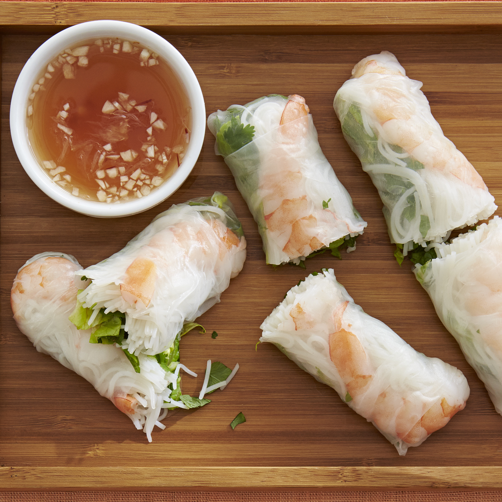

HOME
Vietnamese Spring Rolls

An enjoyable alternative to the fried variety.
Ingredients
- 2 ounces rice vermicelli
- 8 rice wrappers (8.5 inch diameter)
- 8 large cooked shrimp - peeled, deveined and cut in half
- 1⅓ tablespoons chopped fresh Thai basil
- 3 tablespoons chopped fresh mint leaves
- 3 tablespoons chopped fresh cilantro
- 2 leaves lettuce, chopped
- 4 teaspoons fish sauce
- ¼ cup water
- 2 tablespoons fresh lime juice
- 1 clove garlic, minced
- 2 tablespoons white sugar
- ½ teaspoon garlic chili sauce
- 3 tablespoons hoisin sauce
- 1 teaspoon finely chopped peanuts
Steps:
- Bring a medium saucepan of water to boil. Boil rice vermicelli 3 to 5 minutes, or until al dente, and drain.
- Fill a large bowl with warm water. Dip one wrapper into the hot water for 1 second to soften.
- Lay wrapper flat. In a row across the center, place 2 shrimp halves, a handful of vermicelli, basil, mint, cilantro and lettuce, leaving about 2 inches uncovered on each side.
- Fold uncovered sides inward, then tightly roll the wrapper, beginning at the end with the lettuce. Repeat with remaining ingredients.
- In a small bowl, mix the fish sauce, water, lime juice, garlic, sugar and chili sauce.
- In another small bowl, mix the hoisin sauce and peanuts.
- Serve rolled spring rolls with the fish sauce and hoisin sauce mixtures.